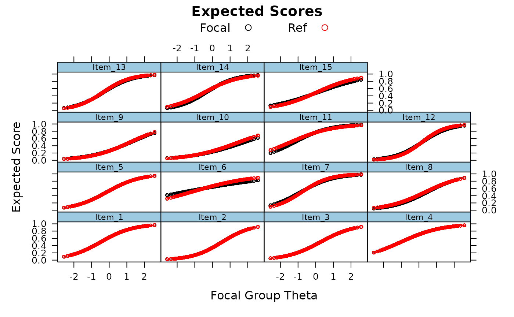
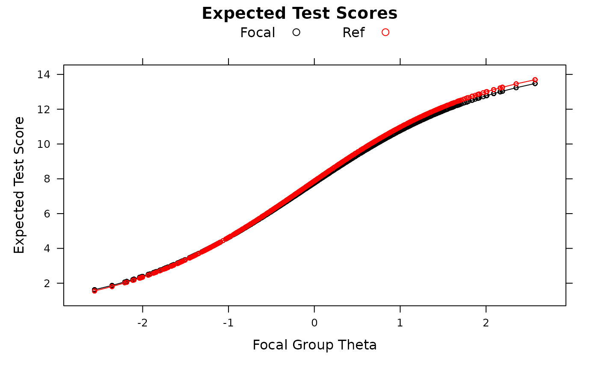
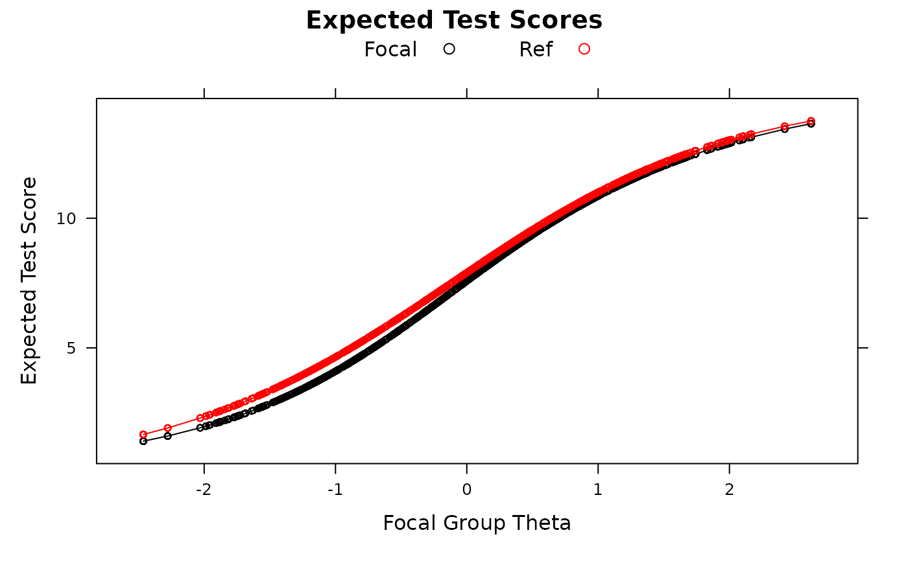
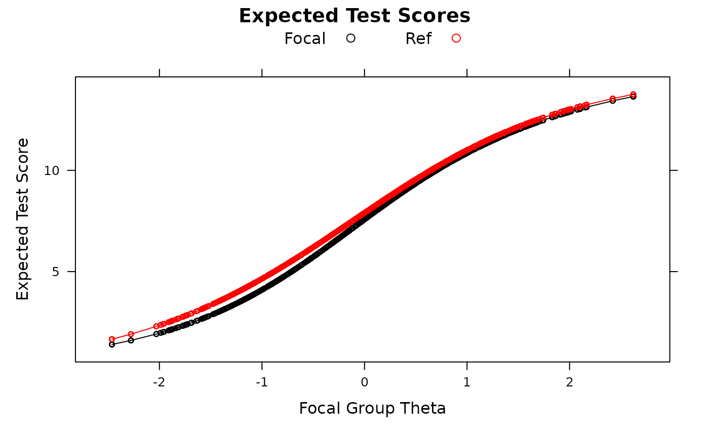

Computes effect size measures of differential item functioning and differential test/bundle functioning based on expected scores from Meade (2010). Item parameters from both reference and focal group are used in conjunction with focal group empirical theta estimates (and an assumed normally distributed theta) to compute expected scores.
Arguments
- mod
a multipleGroup object which estimated only 2 groups. The first group in this object is assumed to be the reference group by default (i.e.,
ref.group = 1), which conforms to theinvariancearguments inmultipleGroup- Theta.focal
an optional matrix of Theta values from the focal group to be evaluated. If not supplied the default values to
fscoreswill be used in conjunction with the...arguments passed- focal_items
a numeric vector indicating which items to include the tests. The default uses all of the items. Selecting fewer items will result in tests of 'differential bundle functioning' when
DIF = FALSE- DIF
logical; return a data.frame of item-level imputation properties? If
FALSE, only DBF and DTF statistics will be reported- npts
number of points to use in the integration. Default is 61
- theta_lim
lower and upper limits of the latent trait (theta) to be evaluated, and is used in conjunction with
npts- plot
logical; plot expected scores of items/test where expected scores are computed using focal group thetas and both focal and reference group item parameters
- type
type of objects to draw in
lattice; default plots both points and lines- par.strip.text
plotting argument passed to
lattice- par.settings
plotting argument passed to
lattice- ...
DIF
The default DIF = TRUE produces several effect sizes indices at the item level.
Signed indices allow DIF favoring the focal group at one point on the theta
distribution to cancel DIF favoring the reference group at another point on the theta
distribution. Unsigned indices take the absolute value before summing or averaging,
thus not allowing cancellation of DIF across theta.
- SIDS
Signed Item Difference in the Sample. The average difference in expected scores across the focal sample using both focal and reference group item parameters.
- UIDS
Unsigned Item Difference in the Sample. Same as SIDS except absolute value of expected scores is taken prior to averaging across the sample.
- D-Max
The maximum difference in expected scores in the sample.
- ESSD
Expected Score Standardized Difference. Cohen's D for difference in expected scores.
- SIDN
Signed Item Difference in a Normal distribution. Identical to SIDS but averaged across a normal distribution rather than the sample.
- UIDN
Unsigned Item Difference in a Normal distribution. Identical to UIDS but averaged across a normal distribution rather than the sample.
DBF/DTF
DIF = FALSE produces a series of test/bundle-level indices that are based on item-level
indices.
- STDS
Signed Test Differences in the Sample. The sum of the SIDS across items.
- UTDS
Unsigned Test Differences in the Sample. The sum of the UIDS across items.
- Stark's DTFR
Stark's version of STDS using a normal distribution rather than sample estimated thetas.
- UDTFR
Unsigned Expected Test Scores Differences in the Sample. The difference in observed summed scale scores expected, on average, across a hypothetical focal group with a normally distributed theta, had DF been uniform in nature for all items
- UETSDS
Unsigned Expected Test Score Differences in the Sample. The hypothetical difference expected scale scores that would have been present if scale-level DF had been uniform across respondents (i.e., always favoring the focal group).
- UETSDN
Identical to UETSDS but computed using a normal distribution.
- Test D-Max
Maximum expected test score differences in the sample.
- ETSSD
Expected Test Score Standardized Difference. Cohen's D for expected test scores.
References
Chalmers, R., P. (2012). mirt: A Multidimensional Item Response Theory Package for the R Environment. Journal of Statistical Software, 48(6), 1-29. doi:10.18637/jss.v048.i06
Meade, A. W. (2010). A taxonomy of effect size measures for the differential functioning of items and scales. Journal of Applied Psychology, 95, 728-743.
Author
Adam Meade, with contributions by Phil Chalmers rphilip.chalmers@gmail.com
Examples
# \donttest{
# no DIF
set.seed(12345)
a <- matrix(abs(rnorm(15,1,.3)), ncol=1)
d <- matrix(rnorm(15,0,.7),ncol=1)
itemtype <- rep('2PL', nrow(a))
N <- 1000
dataset1 <- simdata(a, d, N, itemtype)
dataset2 <- simdata(a, d, N, itemtype, mu = .1, sigma = matrix(1.5))
dat <- rbind(dataset1, dataset2)
# ensure 'Ref' is the first group (and therefore reference group during estimation)
group <- factor(c(rep('Ref', N), rep('Focal', N)), levels = c('Ref', 'Focal'))
mod <- multipleGroup(dat, 1, group = group,
invariance = c(colnames(dat)[1:5], 'free_means', 'free_var'))
#>
coef(mod, simplify=TRUE)
#> $Ref
#> $items
#> a1 d g u
#> Item_1 1.085 0.518 0 1
#> Item_2 1.182 -0.652 0 1
#> Item_3 1.040 -0.284 0 1
#> Item_4 0.869 0.885 0 1
#> Item_5 1.063 0.144 0 1
#> Item_6 0.567 0.683 0 1
#> Item_7 1.273 1.001 0 1
#> Item_8 0.924 -0.330 0 1
#> Item_9 0.890 -1.059 0 1
#> Item_10 0.721 -1.082 0 1
#> Item_11 0.832 1.188 0 1
#> Item_12 1.478 -0.252 0 1
#> Item_13 1.288 0.445 0 1
#> Item_14 1.034 0.452 0 1
#> Item_15 0.864 -0.062 0 1
#>
#> $means
#> F1
#> 0
#>
#> $cov
#> F1
#> F1 1
#>
#>
#> $Focal
#> $items
#> a1 d g u
#> Item_1 1.085 0.518 0 1
#> Item_2 1.182 -0.652 0 1
#> Item_3 1.040 -0.284 0 1
#> Item_4 0.869 0.885 0 1
#> Item_5 1.063 0.144 0 1
#> Item_6 0.363 0.585 0 1
#> Item_7 1.083 0.915 0 1
#> Item_8 0.997 -0.471 0 1
#> Item_9 0.840 -1.041 0 1
#> Item_10 0.647 -1.181 0 1
#> Item_11 1.009 1.199 0 1
#> Item_12 1.278 -0.240 0 1
#> Item_13 1.201 0.366 0 1
#> Item_14 1.219 0.403 0 1
#> Item_15 0.696 -0.103 0 1
#>
#> $means
#> F1
#> 0.106
#>
#> $cov
#> F1
#> F1 1.697
#>
#>
empirical_ES(mod)
#> SIDS UIDS SIDN UIDN ESSD theta.of.max.D max.D mean.ES.foc
#> Item_1 0.000 0.000 0.000 0.000 0.000 -1.786 0.000 0.618
#> Item_2 0.000 0.000 0.000 0.000 0.000 -1.786 0.000 0.408
#> Item_3 0.000 0.000 0.000 0.000 0.000 -1.786 0.000 0.468
#> Item_4 0.000 0.000 0.000 0.000 0.000 -1.786 0.000 0.691
#> Item_5 0.000 0.000 0.000 0.000 0.000 -1.786 0.000 0.550
#> Item_6 -0.018 0.042 -0.020 0.037 -0.148 -2.560 0.098 0.645
#> Item_7 -0.004 0.023 -0.007 0.021 -0.018 -1.935 0.047 0.686
#> Item_8 -0.024 0.024 -0.026 0.026 -0.106 -0.533 -0.037 0.431
#> Item_9 -0.001 0.007 0.000 0.006 -0.005 2.571 -0.020 0.313
#> Item_10 -0.024 0.025 -0.023 0.023 -0.163 2.571 -0.065 0.271
#> Item_11 -0.009 0.024 -0.006 0.021 -0.048 -2.357 -0.081 0.736
#> Item_12 -0.003 0.023 -0.003 0.022 -0.012 1.229 -0.036 0.484
#> Item_13 -0.012 0.015 -0.014 0.015 -0.045 0.618 -0.024 0.589
#> Item_14 -0.012 0.027 -0.012 0.025 -0.048 -1.426 -0.056 0.595
#> Item_15 -0.013 0.031 -0.013 0.028 -0.064 1.901 -0.057 0.494
#> mean.ES.ref
#> Item_1 0.618
#> Item_2 0.408
#> Item_3 0.468
#> Item_4 0.691
#> Item_5 0.550
#> Item_6 0.663
#> Item_7 0.690
#> Item_8 0.455
#> Item_9 0.314
#> Item_10 0.295
#> Item_11 0.744
#> Item_12 0.487
#> Item_13 0.601
#> Item_14 0.607
#> Item_15 0.507
empirical_ES(mod, DIF=FALSE)
#> Effect Size Value
#> 1 STDS -0.12007524
#> 2 UTDS 0.24122923
#> 3 UETSDS 0.13068433
#> 4 ETSSD -0.03693475
#> 5 Starks.DTFR -0.12338715
#> 6 UDTFR 0.22580510
#> 7 UETSDN 0.12941066
#> 8 theta.of.max.test.D 1.73546824
#> 9 Test.Dmax -0.23002060
empirical_ES(mod, DIF=FALSE, focal_items = 10:15)
#> Effect Size Value
#> 1 STDS -0.07301229
#> 2 UTDS 0.14449888
#> 3 UETSDS 0.07301229
#> 4 ETSSD -0.05523295
#> 5 Starks.DTFR -0.06993679
#> 6 UDTFR 0.13444167
#> 7 UETSDN 0.06993679
#> 8 theta.of.max.test.D 1.90144409
#> 9 Test.Dmax -0.12250160
empirical_ES(mod, plot=TRUE)

empirical_ES(mod, plot=TRUE, DIF=FALSE)

###---------------------------------------------
# DIF
set.seed(12345)
a1 <- a2 <- matrix(abs(rnorm(15,1,.3)), ncol=1)
d1 <- d2 <- matrix(rnorm(15,0,.7),ncol=1)
a2[10:15,] <- a2[10:15,] + rnorm(6, 0, .3)
d2[10:15,] <- d2[10:15,] + rnorm(6, 0, .3)
itemtype <- rep('dich', nrow(a1))
N <- 1000
dataset1 <- simdata(a1, d1, N, itemtype)
dataset2 <- simdata(a2, d2, N, itemtype, mu = .1, sigma = matrix(1.5))
dat <- rbind(dataset1, dataset2)
group <- factor(c(rep('Ref', N), rep('Focal', N)), levels = c('Ref', 'Focal'))
mod <- multipleGroup(dat, 1, group = group,
invariance = c(colnames(dat)[1:5], 'free_means', 'free_var'))
#>
coef(mod, simplify=TRUE)
#> $Ref
#> $items
#> a1 d g u
#> Item_1 1.202 0.566 0 1
#> Item_2 1.163 -0.626 0 1
#> Item_3 0.965 -0.316 0 1
#> Item_4 0.819 0.872 0 1
#> Item_5 1.165 0.161 0 1
#> Item_6 0.533 0.631 0 1
#> Item_7 1.147 1.022 0 1
#> Item_8 1.064 -0.319 0 1
#> Item_9 0.889 -1.003 0 1
#> Item_10 0.756 -1.098 0 1
#> Item_11 1.024 1.394 0 1
#> Item_12 1.485 -0.268 0 1
#> Item_13 1.280 0.402 0 1
#> Item_14 1.009 0.490 0 1
#> Item_15 0.745 -0.136 0 1
#>
#> $means
#> F1
#> 0
#>
#> $cov
#> F1
#> F1 1
#>
#>
#> $Focal
#> $items
#> a1 d g u
#> Item_1 1.202 0.566 0 1
#> Item_2 1.163 -0.626 0 1
#> Item_3 0.965 -0.316 0 1
#> Item_4 0.819 0.872 0 1
#> Item_5 1.165 0.161 0 1
#> Item_6 0.326 0.556 0 1
#> Item_7 1.085 0.947 0 1
#> Item_8 0.987 -0.529 0 1
#> Item_9 0.786 -1.009 0 1
#> Item_10 0.908 -1.274 0 1
#> Item_11 1.437 0.628 0 1
#> Item_12 1.947 0.153 0 1
#> Item_13 1.477 0.315 0 1
#> Item_14 1.313 0.623 0 1
#> Item_15 0.919 -0.878 0 1
#>
#> $means
#> F1
#> 0.123
#>
#> $cov
#> F1
#> F1 1.788
#>
#>
empirical_ES(mod)
#> SIDS UIDS SIDN UIDN ESSD theta.of.max.D max.D mean.ES.foc
#> Item_1 0.000 0.000 0.000 0.000 0.000 1.153 0.000 0.624
#> Item_2 0.000 0.000 0.000 0.000 0.000 1.153 0.000 0.417
#> Item_3 0.000 0.000 0.000 0.000 0.000 1.153 0.000 0.464
#> Item_4 0.000 0.000 0.000 0.000 0.000 1.153 0.000 0.691
#> Item_5 0.000 0.000 0.000 0.000 0.000 1.153 0.000 0.556
#> Item_6 -0.014 0.045 -0.017 0.037 -0.120 -2.463 0.103 0.640
#> Item_7 -0.009 0.010 -0.010 0.011 -0.037 0.312 -0.016 0.691
#> Item_8 -0.043 0.043 -0.046 0.046 -0.174 0.940 -0.066 0.424
#> Item_9 -0.010 0.018 -0.008 0.015 -0.054 2.421 -0.050 0.319
#> Item_10 -0.016 0.025 -0.020 0.025 -0.089 2.622 0.043 0.284
#> Item_11 -0.136 0.136 -0.138 0.138 -0.545 -1.274 -0.291 0.627
#> Item_12 0.064 0.070 0.075 0.079 0.195 0.536 0.139 0.555
#> Item_13 -0.016 0.026 -0.017 0.025 -0.055 -1.037 -0.055 0.579
#> Item_14 0.014 0.042 0.019 0.039 0.055 -1.774 -0.061 0.630
#> Item_15 -0.137 0.137 -0.147 0.147 -0.663 -0.086 -0.173 0.355
#> mean.ES.ref
#> Item_1 0.624
#> Item_2 0.417
#> Item_3 0.464
#> Item_4 0.691
#> Item_5 0.556
#> Item_6 0.654
#> Item_7 0.699
#> Item_8 0.467
#> Item_9 0.329
#> Item_10 0.300
#> Item_11 0.763
#> Item_12 0.490
#> Item_13 0.595
#> Item_14 0.616
#> Item_15 0.492
empirical_ES(mod, DIF = FALSE)
#> Effect Size Value
#> 1 STDS -0.30204052
#> 2 UTDS 0.55171554
#> 3 UETSDS 0.30204052
#> 4 ETSSD -0.08665251
#> 5 Starks.DTFR -0.30918657
#> 6 UDTFR 0.56373600
#> 7 UETSDN 0.30918906
#> 8 theta.of.max.test.D -1.05111220
#> 9 Test.Dmax -0.54821795
empirical_ES(mod, plot=TRUE)
 empirical_ES(mod, plot=TRUE, DIF=FALSE)

# }
empirical_ES(mod, plot=TRUE, DIF=FALSE)

# }